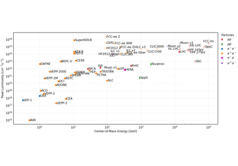

1.0
Export Accelerator Timeline
Interactive Accelerator Timeline
Preparations
Energy Timeline
Luminosity timeline
Luminosity vs. Energy
Save plots
Welcome
Accelerator Charts Gallery
Export Accelerator Timeline
Interactive Accelerator Timeline
Scripts API Documentation
Main Scripts
Utilities
accelerator_timeline
Accelerator Charts Gallery
Edit on GitHub
Accelerator Charts Gallery


Export Accelerator Timeline
Export Accelerator Timeline
Interactive Accelerator Timeline
Interactive Accelerator Timeline
Gallery generated by Sphinx-Gallery